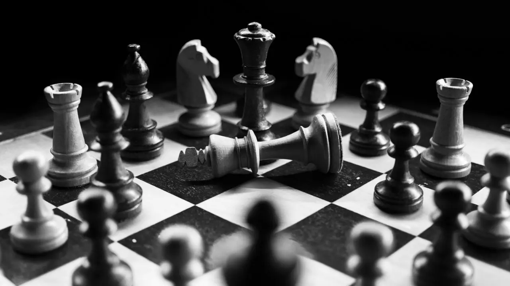

Top Chess Openings for Success

Date: November 7, 2024 Author: John Smith
Chess openings set the stage for the entire game. Learn about the most effective openings used by grandmasters to dominate
their opponents. From the Sicilian Defense to the King's Gambit, we've got you covered.
Read more...
World Chess Championship 2024 Analysis

Date: November 6, 2024 Author: Alice Johnson
Relive the drama and intensity of the 2024 World Chess Championship. Discover how Magnus Carlsen and Hans Niemann battled it out
in a series of epic games. Explore the critical moves, turning points, and insights into the players' minds.
Read more...
How to Become a Chess Grandmaster

Date: November 5, 2024 Author: Sarah Lee
Becoming a chess grandmaster requires dedication, practice, and strategy. This comprehensive guide explores the steps to achieving
the prestigious title, including practical tips and advice from experts.
Read more...